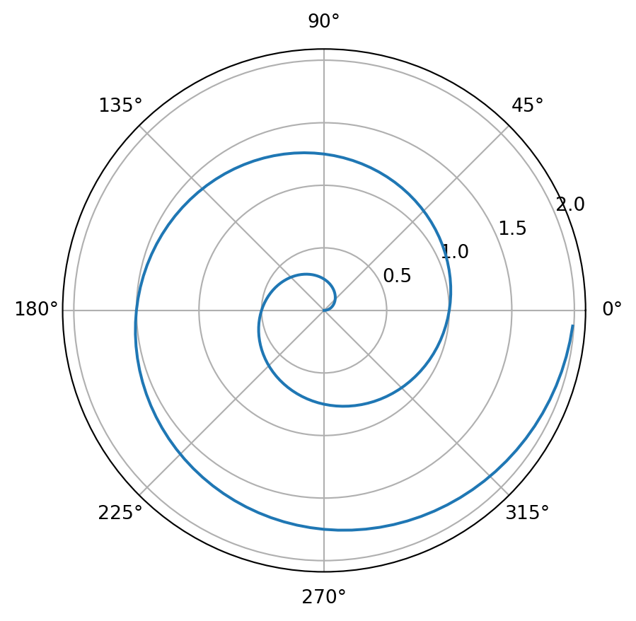

See code

Markdown is a lightweight markup language with plain-text formatting syntax. With it, you can create formatted text using simple symbols and keywords.
Jupyter Notebooks are interactive computational environments where you can combine code execution, text, mathematics, plots, and rich media. They are widely used in data science, machine learning, and academic research for their flexibility and ease of use.
In this article I will be covering the most common formatting techniques used in Markdown.
One can apply header formatting using (#).
# is a title
## is a header
### is a sub header
#### is a sub sub header
Encapsulating a text in asterisks (*) one can apply italics format:
*This text will be in italics.*
This text is in italics.
Encapsulating a text in double asterisks (**) one can apply bold format:
**This text will be bold.**
This text is bold.
Encapsulating a text in double tilde (~) one can apply strikethrough:
~~This text will be strikethrough.~~
This text is strikethrough.
Encapsulating a text in backticks (`) one can apply coding format:
This text is displayed as code.
`This text will be displayed as code.`
Encapsulating a text in tripple backticks (```) a line before it begins and a line after it finishes, one can apply multiline coding format:
This is the first line of a multiline code.
This is the second line of a multiline code.
This is the third line of a multiline code.Using a single greater than (>) at the beggining, one can show a quote:
> This text will be a quote
This text is a quote
To start an unordered list, use a single hyphen and space (-) followed by text. To start an ordered list, use a number, dot and space (1.) followed by text. To add sublists, follow the same syntax but add two spaces before.
This input:
- First bullet point
- First sub bullet point
- First sub sub bullet point
- Second sub sub bullet point
- Third sub sub bullet point
- Second sub bullet point
- Third sub bullet point
- Second bullet point
- Third bullet pointHas this output:
To start an ordered list, use a number, dot and space (1.) followed by text. To add sublists, follow the same syntax but add two spaces before.
This input:
1. First points
1. First sub point
1. First sub sub point
2. Second sub sub point
3. Third sub sub point
2. Second sub point
3. Third sub point
2. Second point
3. Third pointHas this output:
Linking to outside websites is done by encapsulating in square brackets ([]) the text that can be clicked to use the link, followed by parenthesis (()) with the website’s URL. One can add a space after the URL and a text encapsulated by quotation marks ("") to show a name when the link is hovered over.
[Text to be clicked](http://google.com "Hovered information")
Text to be clicked
[External Link to Google](http://google.com)
External Link to Google
Internal links work the same way as external links, but inside the document. Instead of an URL, a number sign (#) is used followed by the name of the heading in the document to link. In this instance, spaces are replaced by hyphens.
[This will take you to the text formatting header.](#text-formatting)
This will take you to the text formatting header.
Images work the same way as external links, but to display them, an exclamation mark (!) is used before the square brackets ([]).


Mathematical notation is rendered by using LaTeX.
$), or multiline by wrapping the expressions with double dollar signs ($$).\begin{split} and \end{split}. Place an ampersand (&) where the alignment should be.| Inline Expression | LaTeX |
|---|---|
$\sqrt{x}$ |
\(\sqrt{x}\) |
$x^2$ |
\(x^2\) |
$\underline{x}$ |
\(\underline{x}\) |
$\bar{x}$ |
\(\bar{x}\) |
$\sigma$ |
\(\sigma\) |
$\frac{x+1}{x-1}$ |
\(\frac{x+1}{x-1}\) |
$\sum_{0}^{\infty}{\frac{1}{n}}$ |
\(\sum_{0}^{\infty}{\frac{1}{n}}\) |
$\int_{0}^{\infty}{\frac{1}{n}}$ |
\(\int_{0}^{\infty}{\frac{1}{n}}\) |
Multiline aligned at the equal sign input:
$$
\begin{split}
\dot{x} & = \sigma (3y - 5t)\\
\dot{x} & = 3 \sigma y - 5 \sigma t \\
\dot{x} & = (1+1+1) \sigma y - (10-5) \sigma t \\
\end{split}
$$Output: \[ \begin{split} \dot{x} & = \sigma (3y - 5t)\\ \dot{x} & = 3 \sigma y - 5 \sigma t \\ \dot{x} & = (1+1+1) \sigma y - (10-5) \sigma t \\ \end{split} \]
Multiline aligned at the center input:
$$
\begin{gather}
\dot{x} = \sigma (3y - 5t)\\
\dot{x} = 3 \sigma y - 5 \sigma t\\
\dot{x} = (1+1+1) \sigma y - (10-5) \sigma t\\
\end{gather}
$$\[ \begin{gather} \dot{x} = \sigma (3y - 5t)\\ \dot{x} = 3 \sigma y - 5 \sigma t\\ \dot{x} = (1+1+1) \sigma y - (10-5) \sigma t\\ \end{gather} \]
Colored boxes can be used to highlight important information.
They are a special case and one has to use HTML notation for them. Start by using <div></div> with class "alert alert-info" (or the corresponding name) and finish by putting the text in between them.
Input:
<div class="alert alert-info">
<b>Alert info:</b> Blue boxes (alert-info) provide useful information.
</div>Alert info: Blue boxes (alert-info) provide useful information.
Input:
<div class="alert alert-warning">
<b>Alert warning:</b> Yellow boxes (alert-warning) provide warnings.
</div>Alert warning: Yellow boxes (alert-warning) provide warnings.
Input:
<div class="alert alert-success">
<b>Alert success:</b> Green boxes (alert-success) indicate successful outcomes.
</div>Alert success: Green boxes (alert-success) indicate successful outcomes.
Input:
<div class="alert alert-danger">
<b>Alert danger:</b> Red boxes (alert-danger) provide critical information regarding errors or potential mistakes.
</div>Alert danger: Red boxes (alert-danger) provide critical information regarding errors or potential mistakes.